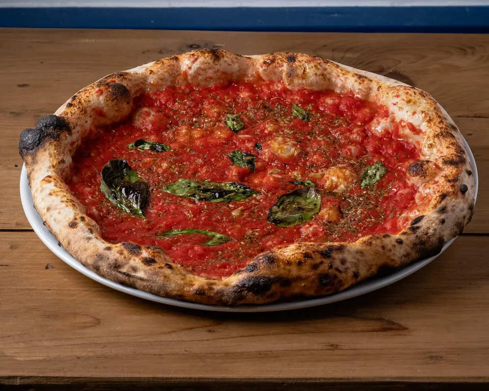
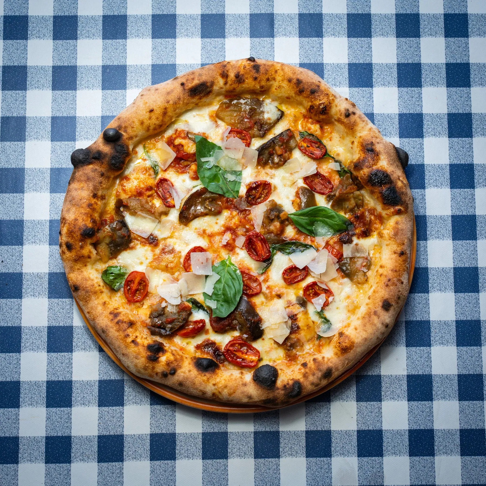
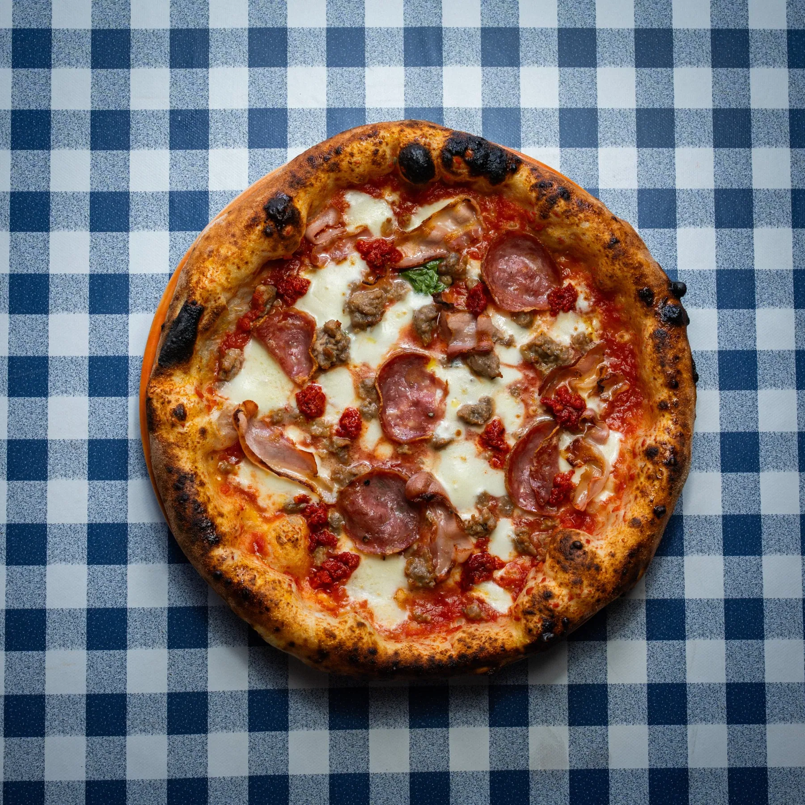
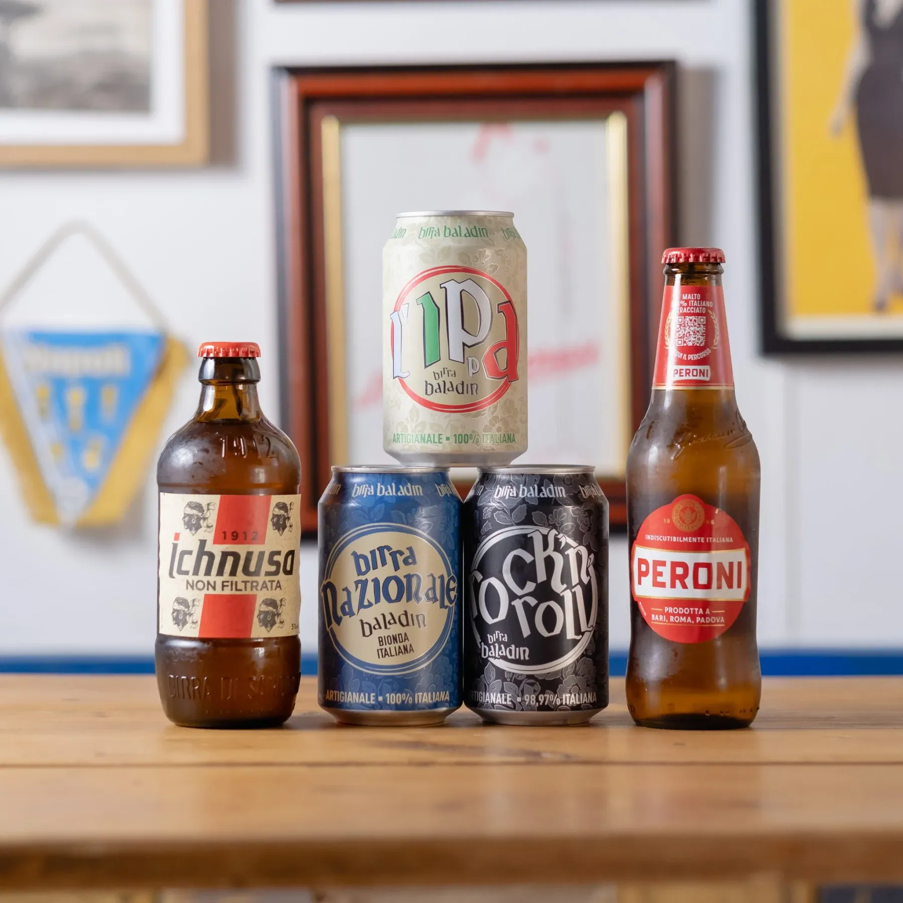
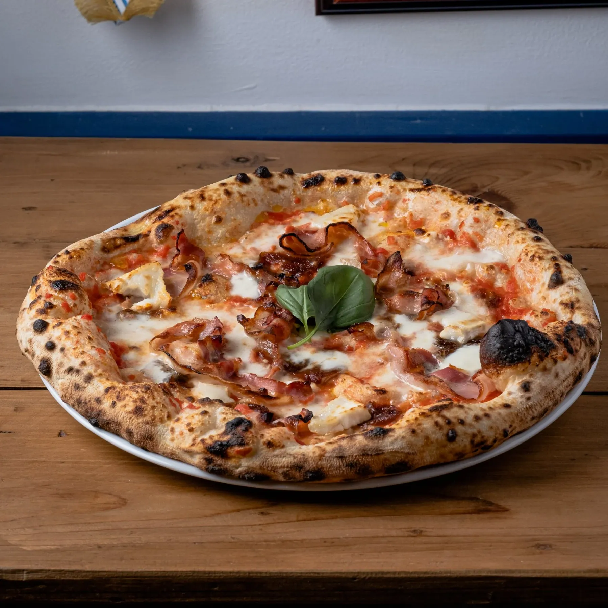

No. 01
Pizzeria e friggitoria, Sheffield
A small restaurant focused on making the best dough possible, with the best ingredients from incredible producers in Italy.
Prices are from the menu on napolicentro.co.uk, in pounds.
01 / 11
How we make it
We focus on making the best dough possible.
The best ingredients, from incredible producers in Italy.
Cooked the Neapolitan way: hot and fast.
Italian craft beers, small producer wines and classic cocktails, with the fritti on the side.



Click and collect on their own ordering page, or book a table on napolicentro.co.uk.
343 Glossop Road, Sheffield. Closed on Mondays.
Neapolitan street food classics: arancini, frittatina, potato croquettes.
| Monday | Closed |
|---|---|
| Tuesday | 5 pm to 9 pm |
| Wednesday | 5 pm to 9 pm |
| Thursday | 5 pm to 9 pm |
| Friday | noon to 2 pm, 5 pm to 10 pm |
| Saturday | noon to 10 pm |
| Sunday | 5 pm to 9 pm |
